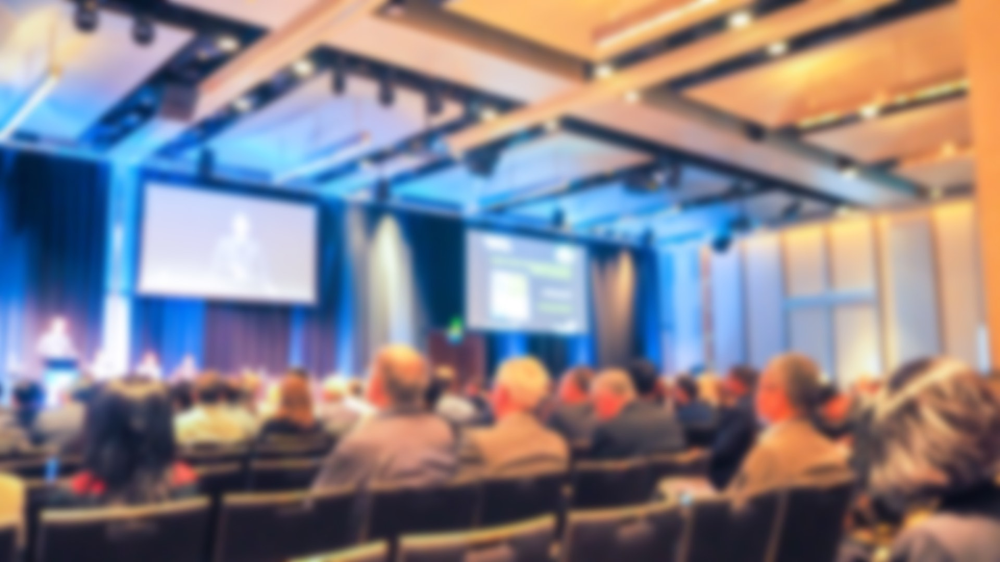
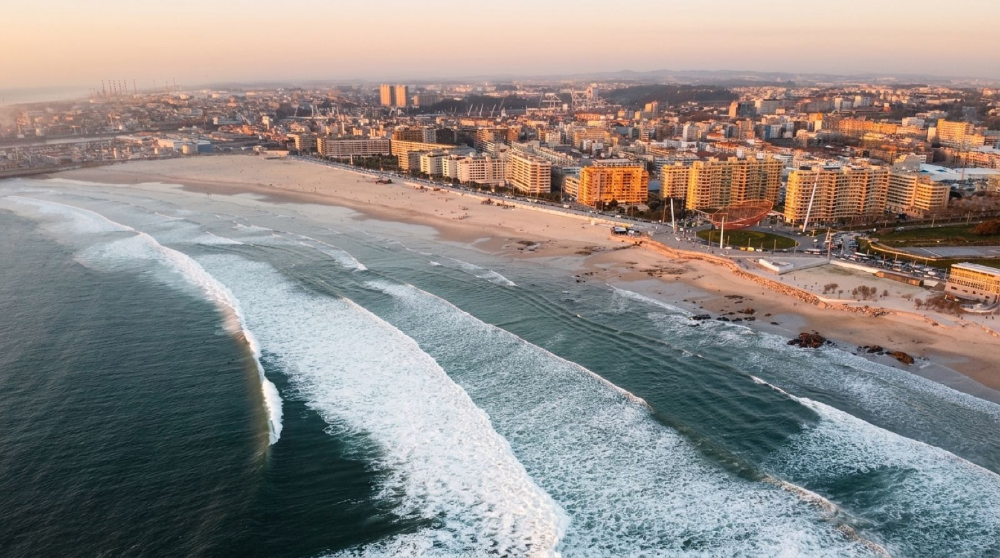
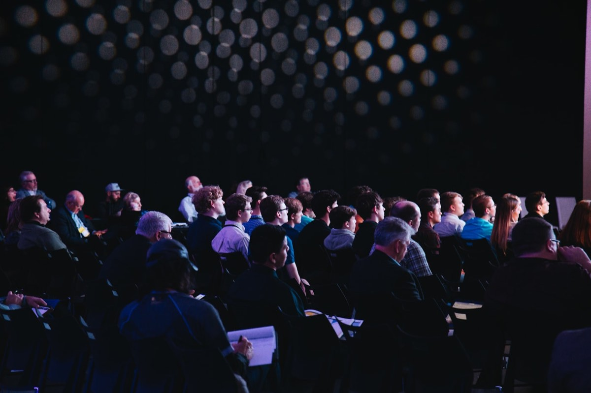
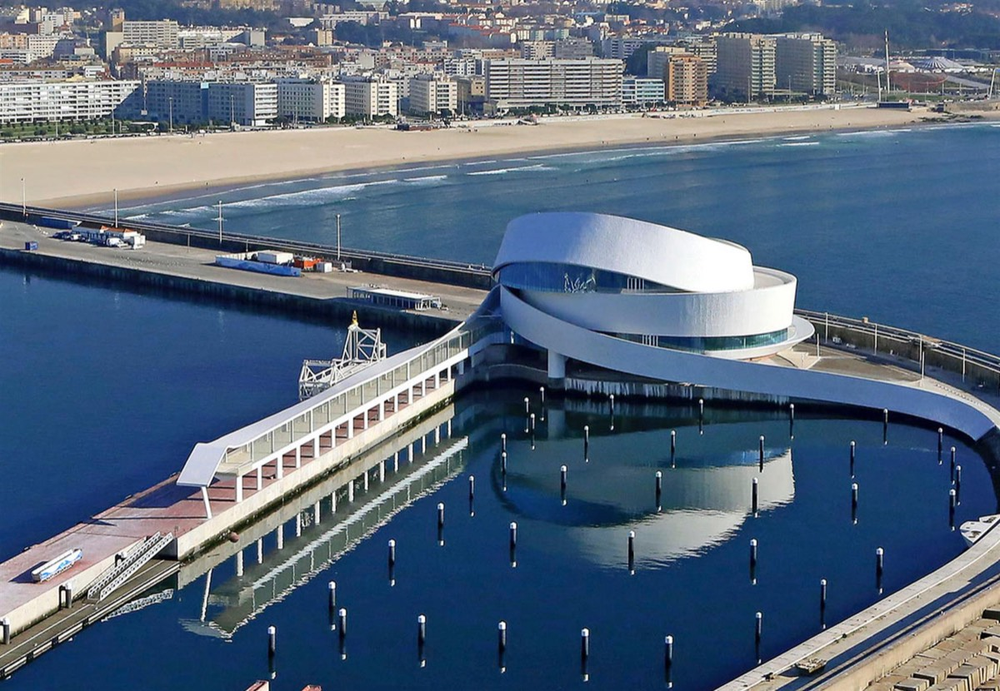
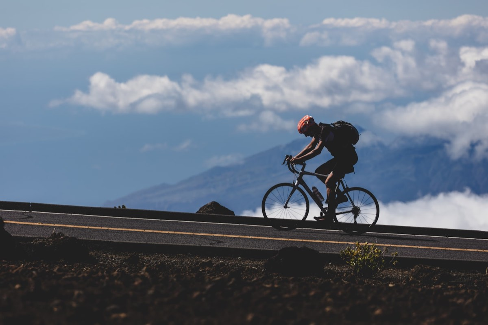

2
Dias de Cimeira

A primeira Cimeira ibérica dedicada ao ecossistema da bicicleta — mobilidade sustentável, inovação e cidades feitas para as pessoas.


Do planeamento urbano à alta competição, cada eixo cruza política, indústria e comunidade em torno de uma paixão comum. Conheça cada temática →

Não escolhemos Matosinhos por acaso. Cidade atlântica do Grande Porto, é um território que respira mar, indústria criativa e uma cultura de mobilidade ativa — o cenário ideal para pensar as cidades do futuro.
Do porto de pesca às praias urbanas, dos parques empresariais às ciclovias junto ao Atlântico, Matosinhos oferece a participantes e oradores uma experiência que vai muito além da sala de conferências.
Vozes de referência nacionais e internacionais — da autarquia à indústria, da academia às startups. Primeiros nomes confirmados.


Mais nomes anunciados em breve.
Ver todos os oradoresUma panorâmica dos dois dias. Consulte a agenda completa, com horários e oradores por sessão, na página do Programa.
Preços de lançamento (early bird) da 1ª edição. Bilhetes Bikes Summit Talks e Awards vendidos em separado.
Uma montra ibérica para marcas, fabricantes, serviços e projetos que estão a redesenhar a mobilidade.
Coloca a tua marca frente a decisores, indústria e milhares de entusiastas. A zona de exposição é o coração do networking da Cimeira.
Selecionamos startups de mobilidade, micromobilidade e tecnologia ciclável para uma sessão de pitch perante investidores e indústria.
A Bikes Summit é um ecossistema de momentos ao longo do ano — do palco das ideias à festa que une a comunidade.
Bikes Summit Talks
Ciclo de talks temáticas que aquece a comunidade, o ano inteiro.
Ver agenda → After Party
After Party
O fecho do dia 1, onde as conversas continuam.
 Sunset Party
Sunset Party
Pôr-do-sol à beira-mar de Matosinhos.
 Night Summit
Night Summit
Programação nocturna e experiências imersivas.

Nomes de referência da mobilidade, do urbanismo e da indústria juntam-se ao palco de Matosinhos.
Ler artigo
A cidade atlântica e a Antiga Fábrica Vasco da Gama serão o cenário da primeira Bikes Summit.
Ler artigo
De Sevilha a Copenhaga, investir na bicicleta transforma a economia, a saúde e o ar das cidades.
Ler artigoAssocie a sua marca à primeira Cimeira ibérica da bicicleta e alcance uma audiência qualificada e comprometida com o futuro.
Apoios & Parceiros
Quer construir esta edição connosco? Temos pacotes de patrocínio à medida.
Quero ser Patrocinador